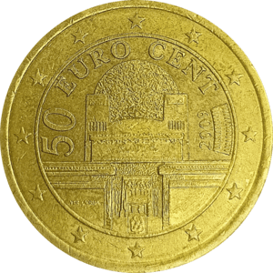
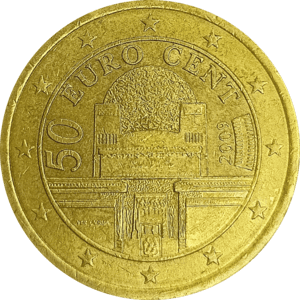
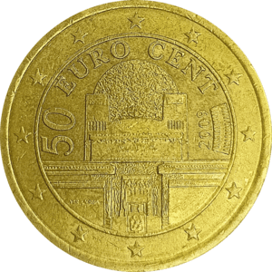
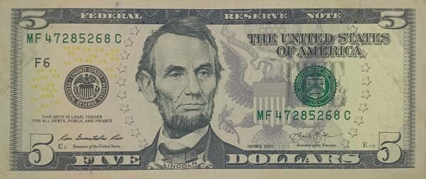
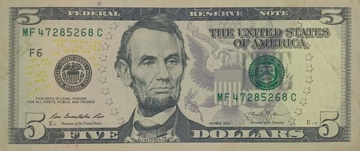

Monedas
 Monedas de colección
Monedas de colección
 Monedas conmemorativas

Monedas circulantes
Monedas conmemorativas

Monedas circulantes

Colecciones numismáticas
Contenido exclusivo de mi propia colección
Aprende sobre monedas y billetes del mundo
Variaciones, cecas, acuñaciones y más
En un futuro se prevé añadir una base de datos de monedas y billetes de todo el mundo, en la que el usuario podrá añadir qué elementos tiene en su colección
Monedas de colección
Monedas conmemorativas

Monedas circulantes
 Billetes antiguos

Billetes extranjeros
Billetes antiguos

Billetes extranjeros
 Recuerdos
Recuerdos
 Réplicas
Réplicas